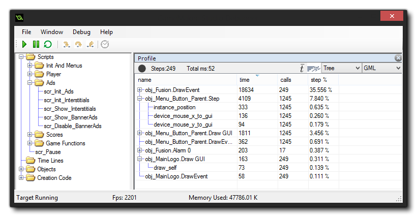
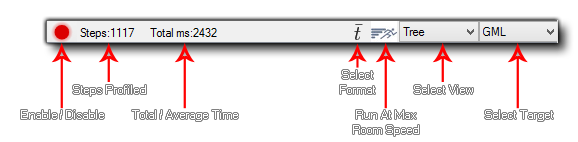
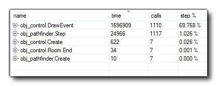

The Debug Module permits you to step through your code and find any issues with the code base, but sometimes you need to check for subtler details in order to properly optimise your games. The Profile option helps to do just that by giving you a performance overview, showing the time takes to call functions, scripts, and even how long it took a specific event to complete. 
As you can see form the image above, you set the Profile as a
window in the Debug Module, and has a button for enabling/disabling
profiling, the number of steps that have been profiled, as well as
a two sections which you can use to display the information in
different ways. 
Clicking the enable/disable button will switch profiling on or off
for the game being debugged, while the value next to it shows the
total number of steps that have been profiled. Beside that you can
also see either the total time taken for the profile, or the
average time taken per step. Which value you view will depend on
the button for selecting the format, which also changes the way
that the Time and Calls data is displayed, with
"Total" being the total number of calls made to the function,
script or event and the total time taken (times are in
microseconds) over the course of the profile. Setting this to
"Average" will make these columns show the average time taken per
step for each function, script or event, and the average number of
times that it was called. You can also click the "Run Game At
Maximum Room Speed" button to force the debugger to remove the room
speed clamp and try to run the game at the real FPS.
The other two options are for controlling what exactly you are
profiling and the data that is shown. The first option is for
selecting how to view the data, and you can choose from the
following:
- Tree - This will show the profile from the top down (more or less the same as the callstack hierarchy) so it will show the event, then the script and then any functions used. Note that you can double click on any of the entries to have it open in the Source debug window if you have one. If you see a (+) icon beside a name then there are further script or function calls within that section, and clicking the (+) will expand the tree to show them.
- Bottom Up - Contrary to the tree view, showing things from the bottom up will show all the functions and scripts individually, and clicking on the (+) will expand to show what actually called them.
The second option is for selecting what data is shown, whether
it should be the event and code data, the engine data, or both. If
you choose "GML", then you will get the events, functions and codes
being called each step while the "Engine" view will only show the
engine calls required by the game, enabling you to see any
bottlenecks in the way that your game is handling things. If you
select both, then both sets of data will be displayed, and the
"Engine" data will be coloured differently to help you
differentiate it from the functions.
The profile data is shown in four columns, and clicking on any of them will sort the data according to the column criteria. 
- Name - This is the name of the event, script or function being called, and may have a (+) beside it to denote further calls to it or from it (depending on the view you have selected). You can double click on any of the names to have it open the code block or script within the Source window, assuming you have one open. Clicking this column will sort the names in alphabetical order.
- Time - This will show either the total time that a function (or script or event) has taken while profiling, or the average time that it has taken each step to be called (depending on the view option selected) and it is displayed in microseconds.
- Calls - Here you can see either the total number of calls to the given event, function or script, or the average number of calls to it in a single step (again, depending on the view options selected).
- Step% - The value shown here is the overall percentage of a single step that the call has taken.
You can export the profile data at any time by right
clicking on the window and selecting the "Export to
file" option. This will write the current view (after expanding
all the nodes) in .csv format, which you can then load
into any spreadsheet, like Excel for example.